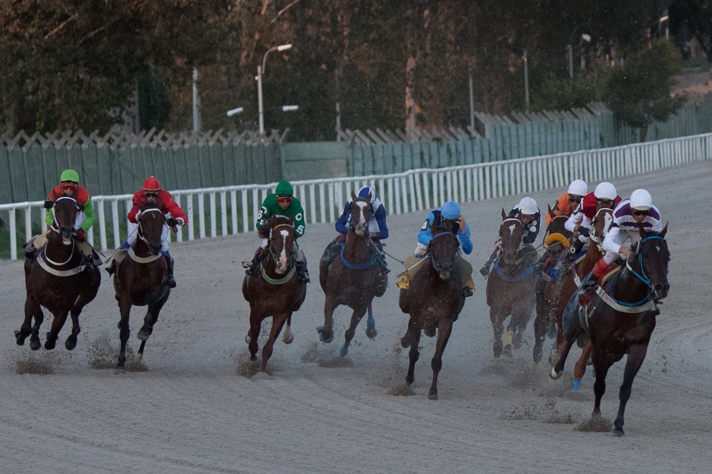

Ernst Blofeld carga con el peso máximo en el arranque de los All-Weather Championships
La 14ª edición de los All-Weather Championships echa a andar el martes 20 de octubre en Newcastle, y el handicap estelar de la jornada tiene como referencia a Ernst Blofeld, que saldrá con el máximo peso.

La carrera central de la reunión es el Midnite A Next Generation Betting App Handicap, programado a las 16:57 sobre algo más de doce furlongs en pista sintética. Ernst Blofeld, de cuatro años y con los colores de Wathnan Racing, parte con un handicap de 96. Lo montará Harry Vigors, que ya fue su jockey en la última salida.
Su campaña en hierba, a las órdenes de Hamad Al Jehani, le ha llevado a varios de los grandes festivales. Allí cuajó buenas actuaciones sin llegar a ganar: fue segundo de Valedictory en el Mallard Handicap del St Leger Festival de Doncaster y, este mismo mes, acabó tercero en una prueba de clase 2 en Newmarket.
En la arena, el balance cambia: dos victorias en tres salidas, la última en un handicap de doce furlongs en Kempton Park en mayo. La lectura es sencilla: en hierba le pesa el handicap; sobre sintético, su historial invita a pensar en algo más.
Richard Brown, de Wathnan Racing, lo explicó así: «Aunque Ernst Blofeld ha rendido con solidez para nosotros este año, probablemente tiene un handicap que le pone difícil ganar en las grandes reuniones de verano».
De ahí la apuesta por repetir con Vigors. «Harry ha estado montando en los trabajos para Hamad este año y nos ha impresionado mucho. Creemos que su descargo de cinco libras es valioso, así que ojalá ayude a Ernst Blofeld a correr una gran carrera», añadió Brown, que dejó abierto el plan invernal del caballo: «Tiene un historial prometedor sobre sintético y no hemos decidido cuál será su programa este invierno. Sospecho que se quedará aquí».
Las series apuntan, como en ediciones anteriores, a dos citas finales: el Finals Day de Newcastle, dotado con un millón de libras, y la reunión del All-Weather Vase en Lingfield Park, con 395.000 libras en juego, el Viernes Santo 26 de marzo.
Por Martín Larrañeta